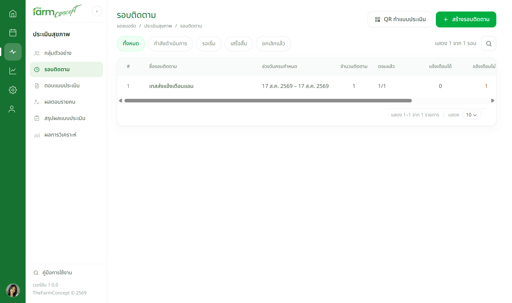
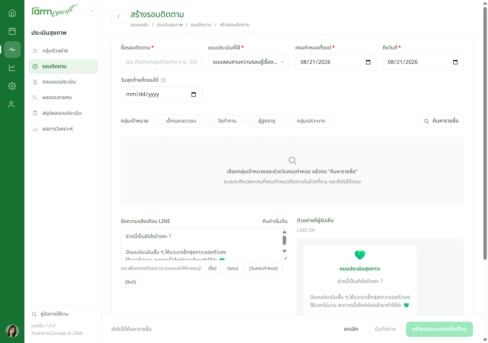
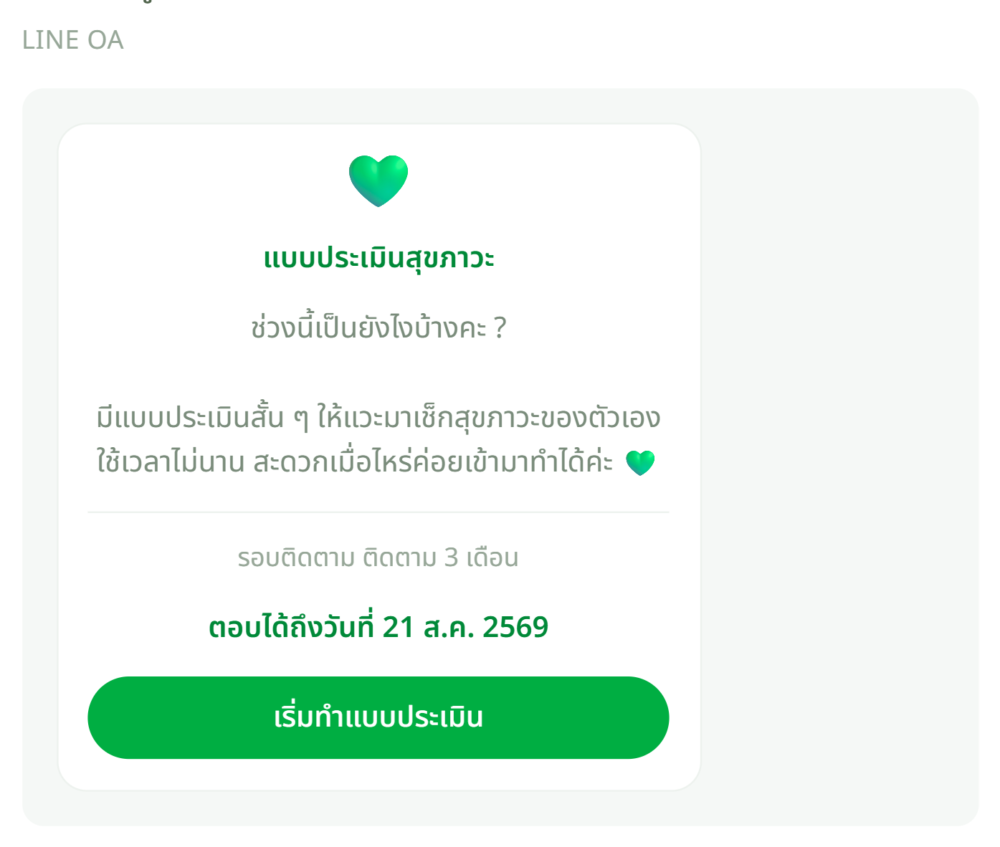

เจ้าหน้าที่
สร้างรอบติดตามและส่งแจ้งเตือน



| ช่องในหน้าสร้างรอบ | ใส่อะไร |
|---|---|
| กลุ่มเป้าหมาย | เลือกกลุ่ม แล้วกด ค้นหารายชื่อ — ระบบจะขึ้นรายชื่อคนที่ถึงกำหนดให้ติ๊กเลือก |
| ข้อความแจ้งเตือน LINE | แก้ข้อความได้ · กดปุ่มตัวแปรเพื่อแทรก ระบบจะแทนค่าให้รายคน — อย่าพิมพ์ชื่อตัวแปรเอง ผิดสระเดียวระบบก็ไม่แทนค่าให้ |
| ตัวอย่างที่ผู้รับเห็น | อัปเดตสดตามที่พิมพ์ ใช้ตรวจก่อนกดส่ง |
| ปุ่มล่างขวา | บันทึกร่าง = เก็บไว้ก่อน ยังไม่ส่ง · สร้างรอบและส่งแจ้งเตือน = ส่งเข้า LINE ทุกคนที่ติ๊กไว้ทันที |
กดส่งแล้วเรียกคืนไม่ได้ — ตรวจชื่อรอบ วันครบกำหนด และจำนวนคนในแถบล่างให้ครบก่อนกด
เจอปัญหาให้ทำอย่างไร
| อาการ | ให้ทำ |
|---|---|
| ค้นหารายชื่อแล้วไม่เจอใครเลย | ยังไม่ถึงวันครบกำหนดของใคร หรือเลือกกลุ่มเป้าหมายผิดกลุ่ม |
| ส่งแล้วบางคนไม่ได้รับ | คนนั้นยังไม่ได้เชื่อม LINE — ระบบส่งได้เฉพาะคนที่เชื่อมแล้ว ที่เหลือต้องแจ้งทางอื่น |
| ส่งผิดรอบ | เรียกคืนข้อความไม่ได้ — สร้างรอบที่ถูกแล้วส่งใหม่ พร้อมแจ้งกลุ่มว่าให้ใช้อันไหน |